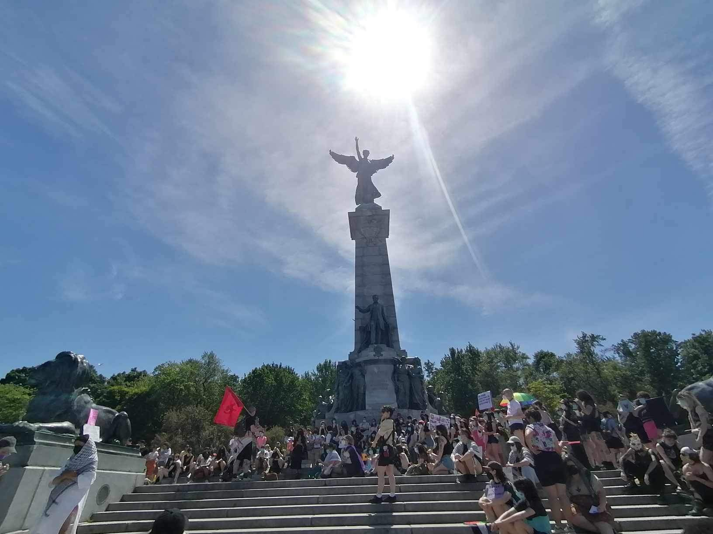

Founded in 2025, the INRS LGBTQ+ Committee is a space for mobilization, mutual support and social connection that aims to strengthen the visibility, representation and inclusion of LGBTQ+ people within the university community. Through social, awareness-raising and mobilization activities, the committee works to create a more welcoming and supportive environment while contributing to greater recognition of diverse identities and experiences in academia.
Community involvement
INRS Queer Committee
Student committee for members of the LGBTQIA2SP+ community

Type
Community involvement
Period
2025–present
Role
Co-founder and co-coordinator
Location
UCS, INRS – Montréal
About
Contribution
As a co-founder and co-coordinator, I contribute to structuring and facilitating the committee, organizing social and awareness-raising activities, and participating in mobilizations and demonstrations for LGBTQ+ rights. I also contribute to a collaboration with the INRS Equity, Diversity and Inclusion (EDI) Committee on a multimedia campaign raising awareness of queer realities. My involvement includes designing the project and drafting a major funding application to support its implementation.
Photos
